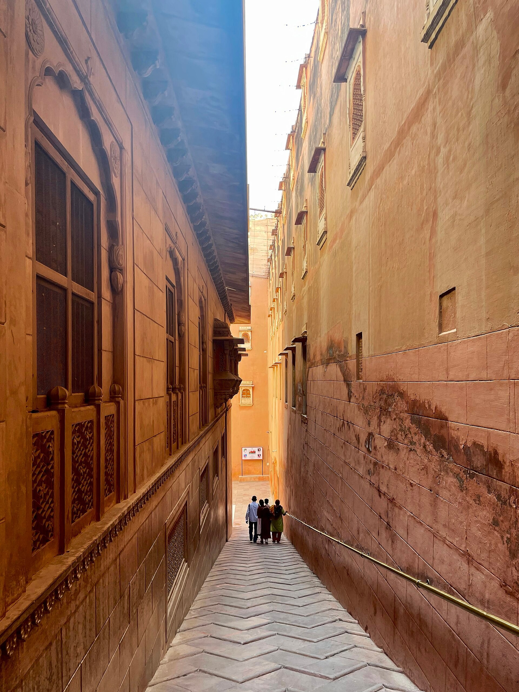

Early 1900s
The Royal Commission
Built in warm red sandstone during Bikaner's golden era of palace architecture, when Sir Samuel Swinton Jacob's Indo-Saracenic style defined the skyline of the royal city.
